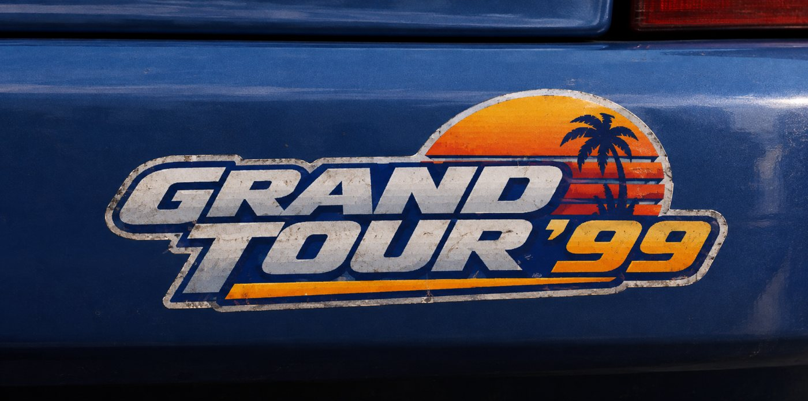

What Gran Turismo 2 plays from the disc and when: the XA music (CD audio stored in a compressed PlayStation format), the menu music, the movies and the attract demo, and the CD player logic that serves them. Every trigger and timing below was checked against the running game.
The race code picks everything when the race is set up and then only reacts. The start jingle is the one piece of music that changes gameplay: the race hold (the wait before the countdown can end) is stretched to the jingle's length, so the countdown ends when the jingle does. A field is one 1/60 s screen refresh.
| Trigger | Track | Mode | Part of the game |
|---|---|---|---|
| Title | silence | title menus | |
| Replay Theater · Options · Save / Load / Data Transfer | 0 · 6 · 7 | loop | title menus |
| GT Mode pages | sequenced tune 0..8 (set by a byte in the page): 7 city map, 1..4 events, 8 licenses | sequenced | GT Mode (starts 2 frames after the page) |
| Arcade menus | sequenced arcade.seq | sequenced | Arcade |
| Session page before a race · post-race menu | 8 | loop | race |
| Race with a hold (not license / Machine Test) | jingle 12 · 10 (GT Mode "One-Make") · 11 (set-up +0x580) | once | race |
| GO | race tune: a random number mod 6 | loop | race |
| Player finishes | 14 (Machine Test 16), then 8 queued (not 2P battle, not license) | once, then loop | race |
| Result list | 19 if not 1st, else 8 | loop | race |
| Payout / award | 17 (1st) · 18 | loop | race |
| Championship end · license results | 9 · 20 (or 8 on the record path) | loop | race |
| Title idle 901 fields | next of 7 demo replays (race tune at its GO) | title menus | |
| never | 13 (its finish mode is never set), 15 |
One file, MUSIC.DAT: four XA channels interleaved, 37.8 kHz stereo, read at single speed. Track t is channel t+1; its range is a table in the game's RAM at 0x800956B8. The game's seconds, (end − start + 74) / 75, set the jingle's hold (75 sectors a second).
| # | Kind | Sectors | Seconds | s | Played by |
|---|---|---|---|---|---|
| 0–5 | licensed race tunes | 3,960–6,297 | 211–336 | GO (one at random); 0 also Replay Theater | |
| 6 · 7 | menu cues | 1,047 · 2,951 | 55.8 · 157.4 | Options · Save / Load / Data Transfer | |
| 8 · 9 | result cues | 2,397 · 1,186 | 127.8 · 63.3 | after the finish, result pages · championship end | |
| 10 | start jingle | 131 | 6.99 | 7 | GT Mode "One-Make": hold 420 |
| 11 | start jingle | 217 | 11.57 | 12 | set-up +0x580: hold 720 |
| 12 | start jingle | 162 | 8.64 | 9 | the others: hold 540 |
| 14 · 16 | finish jingles | 122 · 89 | 6.51 · 4.75 | finish · Machine Test finish | |
| 17–20 | award / result cues | 657–1,685 | 35–90 | 17 win, 18 not, 19 not 1st, 20 license | |
| 13 · 15 | unused | 197 · 60 | 10.5 · 3.2 | never played |
One record in RAM (0x801EFF00) and ten small scripts drive the CD drive. It serves one stream at a time, so every load ends the music. Once per field it fades the CD volume by 8192/32768 and checks the position every 8 fields.
master = ((v << 15) / 255 × 2252) >> 12 of the Music Volume option (default 240 → 16,955), times the fade, into the sound chip's CD input. The menus' sequenced music uses (v << 14) / 255.
Pausing a race fades out and pauses the drive; unpausing resumes from the last checked position, up to 8 fields behind where it stopped.
Every compressed read from the game's data file stops the stream first. The race loads before GO; pages restart their own track after their loads, from the start.
STREAM.DAT: an 8-sector interleave (7 data, 1 XA audio) at double speed. Each data sector has an STR-style 0x0160 header with GT2's own type 0x5349; the picture uses GT2's own coding, unpacked by the main processor for the console's video decoder (MDEC). The Simulation disc has no STREAM.DAT.
| Id | What | Frames | Picture | fps | Seconds | Skip |
|---|---|---|---|---|---|---|
| 0x00–0x17 | Arcade course previews (29 courses → 24 clips) | 419 | 112 × 96 | 30 | 14.0 | cursor moves |
| 0x18 | intro, at power-on | 4,649 | 320 × 192 | 30 | 155.0 | Start |
| 0x19 · 0x1A | ending credits | 3,934 · 4,999 | 640 × 216 · 640 × 224 | 15 | 262 · 333 | no |
Without STREAM.DAT the Arcade course preview reads the disc's first sectors as a movie: an Arcade Mode on the Simulation disc needs a guard against that.
Leave the title screen alone and GT2 plays its demo replays in turn.
Fan project. Not affiliated with Sony Interactive Entertainment or Polyphony Digital. Gran Turismo is a trademark of Sony Interactive Entertainment. No game files are included.